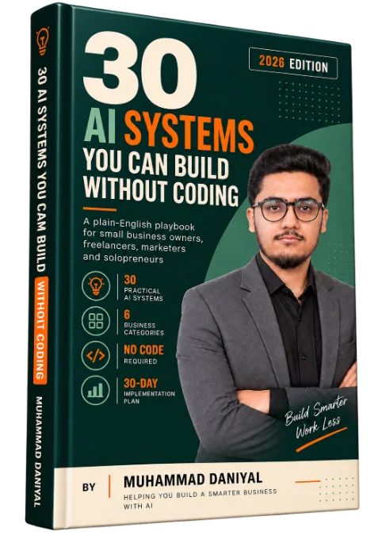
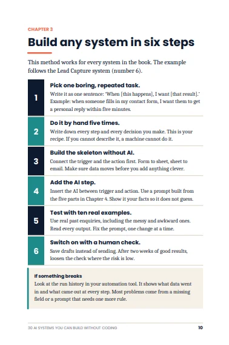
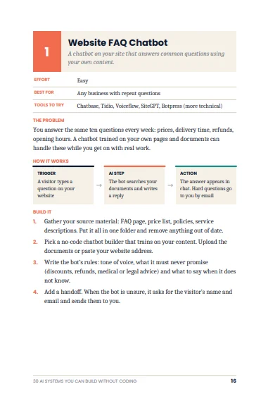
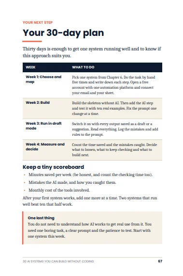
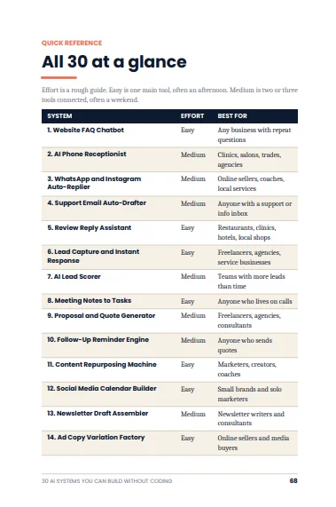

A plain-English playbook for small business owners, freelancers, marketers and solopreneurs.
Turn repetitive business tasks into practical AI-powered workflows — without learning to code.

The book teaches you to turn a repeated task into a small chain of steps that runs on its own — so you stop rewriting the same reply, and start building something that works while you're not there.
You don't need to build all 30. Pick the one that fixes the thing that annoys you most every week.
The book is written for non-technical people, using commonly available no-code and AI tools. Every system is rated Easy (one main tool, often an afternoon) or Medium (two or three tools connected, often a weekend) — so you always know what you're signing up for.
Start with an Easy system. The effort ratings make it easy to choose a starting point that fits your time and comfort level.




No testimonials, no numbers, no case studies. Just what's actually in the book.
You don't need to automate everything. Start with one repetitive task that costs you time every week.
Get the eBook — $9.99